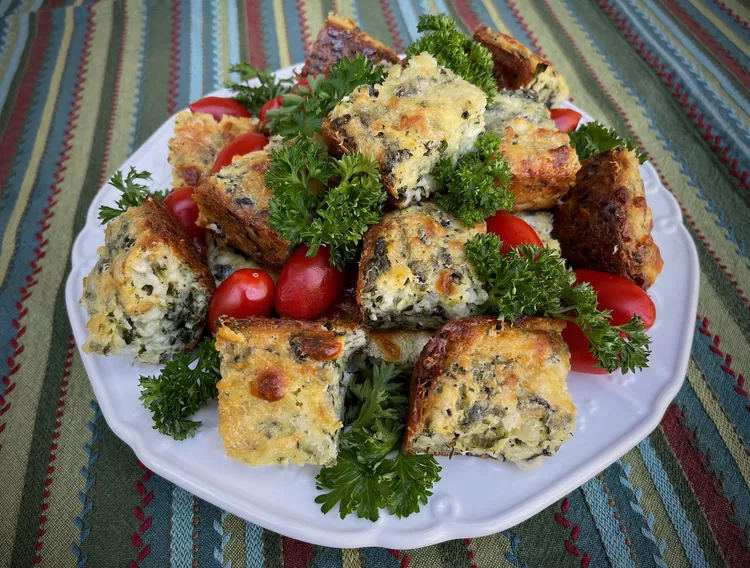

Spinach Feta Brownies recipes

This is a Spinach Feta Brownies
te baked confection. Brownies come in a variety of forms and may be either fudgy or cakey,
depending on their density. Brownies often, but not always, have a glossy "skin" on their upper crust. They may also include nuts, frosting,
cream cheese, chocolate chips, or other ingredients.
ingredients
- ½ cup butter, melted, divided
- 1 (10 ounce) package frozen chopped spinach, thawed and squeezed dry
- 1 tablespoon olive oil
- 11 onion, chopped
- 1 cup all-purpose flour/li>
- 1 teaspoon baking powder
- 1 teaspoon salt
- 1 cup milk
- 2 large eggs
- 1 tablespoon French herb blend
- 4 ounces feta cheese, crumbled
- 4 ounces shredded mozzarella cheese
- 2 tablespoons grated Pecorino Romano cheese
- fresh parsley for garnish (optional)
Steps(Directions)
- Preheat the oven to 375 degrees F (190 degrees C). Use about 1 tablespoon of the melted butter to grease a 7x11-inch baking dish.
- Heat olive oil in a non-stick skillet over medium heat. Add onions to the hot oil and cook, stirring frequently, until onions are soft and beginning to turn clear, 3 to 4 minutes. Remove skillet from heat and add spinach. Stir spinach into the onions, breaking up any large clumps.
- Stir together flour, baking powder, and salt in a large bowl.
- Combine milk and eggs in a small bowl, whisking until milk and eggs are fully incorporated. Drizzle in remaining melted butter, while continuing to stir. Add to flour mixture and stir until there are no lumps.
- Fold in spinach mixture, French herbs, feta cheese, and mozzarella. Do not over-mix. Pour into the prepared dish, using a spatula to smooth and level the surface. Sprinkle grated Pecorino Romano evenly over the top.
- Bake in the center of the preheated oven until the top is browned, 40 to 45 minutes. Test for doneness with a wooden pick inserted into the middle. The dish is done, if the pick comes out clean.
- Allow to cool for 10 to 15 minutes.
- Cut into 18 brownies and garnish with fresh parsley to serve.